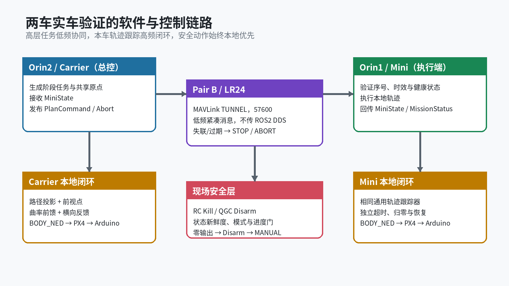
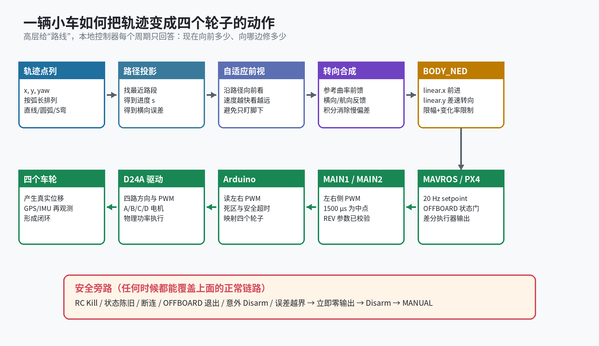
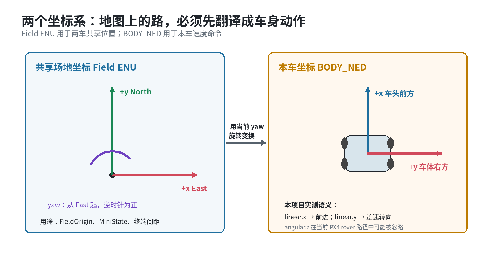
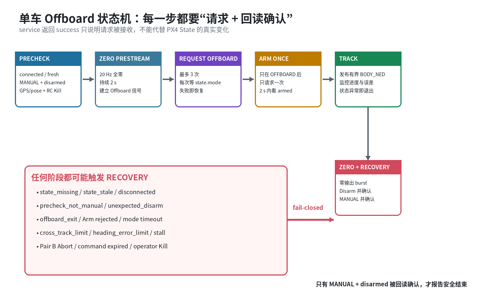
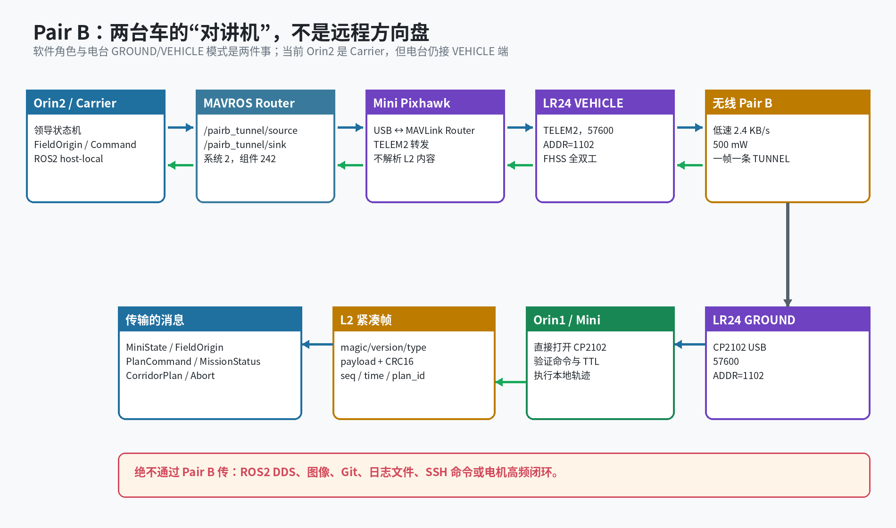
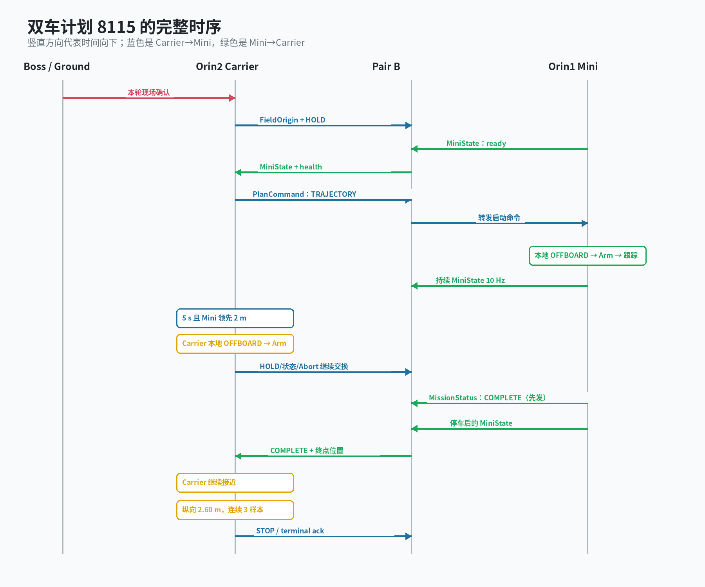
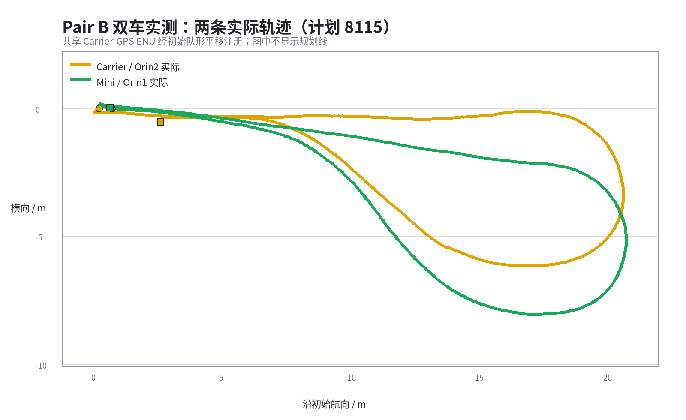
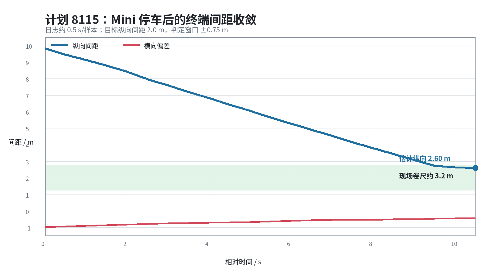

| 组件 | 最简单的理解 | 实际职责 |
|---|---|---|
| Boss / RC / QGC | 现场安全员 | 确认场地、RC Kill、观察状态、必要时人工终止 |
| Orin2 Carrier | 领队 | 确定共享原点和阶段，接收 MiniState，发送命令，也执行自己的轨迹 |
| Orin1 Mini | 队员 | 验证无线命令是否新鲜合法，再启动本地轨迹 |
| ROS2 + MAVROS | 软件总线和翻译官 | 把 PX4 的状态变成 ROS topic，把 ROS setpoint/service 变成 MAVLink |
| PX4 Differential Rover | 底盘飞控 | 管理模式、Arm、安全检查和左右执行器输出 |
| Arduino + D24A | 电机执行器 | 读取 MAIN1/MAIN2 PWM，处理死区/方向/超时，驱动四个轮子 |

最初可以写“前进 5 s、右转 3 s”，但地面摩擦、电池电压、轮子差异一变，车就走不到同一个位置。现在的轨迹是按米表示的一串二维点：每个点包含 x_m、y_m 和参考 yaw_rad，相邻点之间还有弧长进度 s。控制器关心“车现在离路径哪里最近、应该向前看多远”，而不是“计时器走了几秒”。
轨迹结构在 src/orin2_trajectory_tracker.py:27；直线、U 形和 S 形生成器分别在 src/orin2_trajectory_tracker.py:996、src/orin2_trajectory_tracker.py:1017、src/orin2_trajectory_tracker.py:1081。
s 和横向误差。代码：src/orin2_trajectory_tracker.py:269。src/orin2_trajectory_tracker.py:585。linear.x/linear.y，20 Hz 发给 MAVROS/PX4。
本项目把参考曲率、横向误差、航向误差和受限积分组合，再用近似关系把曲率变成 BODY_NED 的转向 bearing。相关函数包括：
src/orin2_trajectory_tracker.py:399：读取前方参考曲率；src/orin2_trajectory_tracker.py:478：计算有界反馈曲率；src/orin2_trajectory_tracker.py:526：更新横向误差积分并处理饱和；src/orin2_trajectory_tracker.py:369：限制转向 bearing 的变化率。当前控制器更准确的名称是：基于 Pure Pursuit 的几何轨迹跟踪器，加上路径曲率前馈、横向误差反馈/积分补偿、车辆适配和速度/转向限幅。它每约 50 ms 读取一次车辆状态并重新计算命令，所以它是闭环自动驾驶；“不是 MPC”不等于“没有反馈”。完整单步入口在 src/orin2_trajectory_tracker.py:585。
Pure Pursuit 把车辆朝向前视点的夹角记为 alpha，前视距离记为 L，用下面的几何关系得到反馈曲率：
控制器再读取规划路径本身的参考曲率 reference_curvature。可以把两部分理解为：
核心合成过程在 src/orin2_trajectory_tracker.py:673 到 src/orin2_trajectory_tracker.py:745。当前实车入口默认使用约 1.10 m 基础前视、0.90～1.80 m 动态范围、1.28 倍反馈适配、0.04 的横向积分增益和 45 deg/s 转向变化率，参数集中在 scripts/run_orin2_outdoor_forward_5m.sh:141。
Kp/Ki/Kd 对单个误差做完整 PID。MPC 是 Model Predictive Control，即模型预测控制。它不只问“现在该往哪边修”，而是用车辆模型模拟未来一段时间，比较许多候选控制序列，再选择综合代价最小的一组。只执行第一步，下一周期根据新状态重新求解。
| 比较项 | 当前几何控制器 | MPC |
|---|---|---|
| 基本思路 | 投影到路径，寻找前视点，立即计算曲率 | 预测未来 N 步，求解最优控制序列 |
| 未来信息 | 通过前视点和参考曲率做局部预判 | 明确计算未来位置、姿态、速度和约束 |
| 车辆模型 | 只需少量几何/车辆适配参数 | 需要可信的运动学或动力学模型 |
| 约束处理 | 命令算出后再限速、限转向、限变化率 | 把转向、速度、加速度和安全距离直接放入优化 |
| 计算量 | 小，20 Hz 运行简单可靠 | 较大，每周期都要运行数值优化器 |
| 双车关系 | Pair B 做高层阶段协调，两车各自闭环 | 可以预测两车未来轨迹，把相对距离纳入代价和约束 |
| 主要风险 | 急弯和执行器迟滞需要调前视/增益 | 模型不准、求解超时或权重不当会导致效果变差 |
形象地说，当前控制器像司机“看着前方一段路持续修方向”；MPC 像司机在脑中同时试演未来几秒的多种走法，然后选择既贴路、又平顺、还不违反限制的一种。
小车阶段的首要目标是验证 Offboard、共享坐标、通用轨迹、Pair B 消息和双车状态机。当前控制器计算便宜、故障容易解释，而且已经在直线、U 形和连续变曲率轨迹上形成实车证据。此时直接引入 MPC，会同时增加车辆建模、求解器实时性、权重选择和约束调试等变量。
MPC 也不会自动修复 GPS 漂移、磁场干扰、坐标系符号错误、PWM 死区、轮胎打滑或 Pair B 过期消息。这些基础状态和执行链必须先可靠，否则 MPC 只是基于错误输入做更复杂的计算。
合理演进不是推翻现有系统，而是保持分层：EasyDocking/Carrier 继续生成共享走廊和任务阶段；预测控制层根据两架飞机模型、未来走廊和相对约束生成速度/姿态参考；PX4 仍负责底层姿态、速度和执行器稳定。小车上的几何控制器仍可作为简单基线和故障回退，用来判断新 MPC 是否真的带来收益。

Field ENU 是两车共享的地图坐标：+x 向东，+y 向北，yaw 从东向逆时针为正。它适合表达“Carrier 在 Mini 后方几米”“共享走廊朝哪个方向”。
BODY_NED 是每辆车自己的命令坐标：+x 指向车头，+y 指向车体右侧。地图上的目标向量必须减去当前位置，再按当前 yaw 旋转到车体坐标，才能变成“向前多少、向哪边修多少”。
linear.y；不能直接照搬常见移动机器人用 angular.z 的习惯。发布和 BODY_NED 回读在 src/orin2_outdoor_forward_5m.py:1316 与 src/orin2_outdoor_forward_5m.py:1586。| 接口 | 用途 | 程序怎么用 |
|---|---|---|
/mavros/state | connected、armed、mode、manual_input | 判断能否进入、是否意外退出 |
/mavros/local_position/pose | 本地位置和姿态 | 路径投影、yaw、实际轨迹 |
/mavros/local_position/velocity_local | 实际速度 | 前视距离和停滞检测 |
/mavros/global_position/global | WGS84 GPS | 共享 FieldOrigin 和 GPS 健康 |
/mavros/statustext/recv | PX4 文字事件 | 解释 Arm 拒绝、failsafe、磁干扰等 |
/mavros/setpoint_velocity/cmd_vel | BODY_NED 速度 setpoint | 正常时 20 Hz 发布；异常时归零 |
/mavros/set_mode | 请求 OFFBOARD / MANUAL | 请求后继续看 state.mode |
/mavros/cmd/arming | Arm / Disarm | Arm 只请求一次；Disarm 后看 state.armed |
这些 publisher/subscriber/client 集中在 src/orin2_outdoor_forward_5m.py:1284 之后。两车运行时都设置 ROS_LOCALHOST_ONLY=1，防止同名 /mavros/* topic 在局域网 DDS 中互相串车。
PX4 rover controller 把前进和转向需求混合成左右两个执行器，输出 MAIN1/MAIN2。Arduino 只看到两侧 PWM，不知道全局轨迹。它负责：
参数和固定 by-id 检查在 scripts/run_orin2_outdoor_forward_5m.sh:297；Arduino 当前映射见 arduino/d24a_pixhawk_differential_pwm_bridge/d24a_pixhawk_differential_pwm_bridge.ino 和 docs/d24a_current_motor_mapping.md。

OFFBOARD 不是“调一个 service 就开始跑”。PX4 要先看到持续 setpoint 流，才允许保持 OFFBOARD。正确顺序是：
早期脚本在已经观察到 armed+OFFBOARD 后又等待 2 s，消耗了 PX4 的状态/自动解锁窗口。现在只保留进入模式之前的零预流，真实进入后立即开始第一段受限动作。外部 Pair B 启动门在 src/orin2_outdoor_forward_5m.py:2080，核心 live 状态机从 src/orin2_outdoor_forward_5m.py:1284 开始。

Orin2 一侧的 Pair B VEHICLE 电台接在 Mini Pixhawk 的 TELEM2。Orin2 程序先把紧凑帧装入 MAVLink TUNNEL，再通过本机 Pixhawk USB 和 MAVROS Router 送到 TELEM2。Orin1 一侧的 GROUND 电台直接通过 CP2102 USB 接 Linux，因此 Orin1 程序直接打开稳定的 /dev/serial/by-id/...。
TUNNEL 适配代码：src/lr24_mavlink_tunnel.py:45；Orin2 ROS2 Router publisher/subscriber：src/lr24_mavlink_tunnel.py:275；实车总控根据角色选择 transport：scripts/run_pairb_staged_chase_live.py:703。
L2 帧头和 CRC 实现在 src/lr24_compact_protocol.py:24 与 src/lr24_compact_protocol.py:176。一条 L2 帧只放进一条 TUNNEL，不拆分、不拼接，因此接收端容易 fail-closed 校验。
| 消息 | 方向 | 关键字段 | 用途 |
|---|---|---|---|
| FieldOrigin | Carrier → Mini | origin_id、经纬高、seq、timestamp | 建立共同 ENU；origin_id 不匹配就拒绝任务 |
| MiniState | Mini → Carrier | x/y、vx/vy、yaw、omega、health、origin_id | 让 Carrier 知道 Mini 在哪里、是否健康 |
| PlanCommand | Carrier → Mini | plan_id、phase、seq、timestamp、valid_until、v/omega | 告诉 Mini 当前阶段；HOLD/STOP 必须全零 |
| MissionStatus | 双向 | WAITING/RUNNING/COMPLETE/FAILED/STOPPED | 独立于 MAVROS health 表示本地 worker 生命周期 |
| Abort | 双向 | source、reason、plan_id、seq、timestamp | 最高优先级；接收后锁存停止 |
| CorridorPlan | Carrier → Mini | 切点、切线、走廊长度、到达时序、前后间距 | 后续 EasyDocking 轨道切出与共享末端走廊 |
结构定义位置：MiniState src/lr24_compact_protocol.py:254，PlanCommand src/lr24_compact_protocol.py:313，MissionStatus src/lr24_compact_protocol.py:467，Abort src/lr24_compact_protocol.py:693，FieldOrigin src/lr24_compact_protocol.py:727。
两台 Orin 的 monotonic clock 数值不需要相等。发送端只把 timestamp_ms 和 valid_until_ms 的差值当作 TTL；接收端在本地收到消息时重新启动这个 TTL 计时。同时还有本地 watchdog。序号采用 uint32 回绕规则，重复和旧命令被拒绝。安全门在 src/lr24_command_guard.py:51。

worker 进程包装和 gate：scripts/run_pairb_staged_chase_live.py:391；等待 MAVROS/FieldOrigin：scripts/run_pairb_staged_chase_live.py:644、scripts/run_pairb_staged_chase_live.py:670。
Carrier 的协调核心是 src/pairb_staged_chase.py:242。它先把阶段从 HOLD 切到 MINI_ACTIVE，向 Mini 发送 TRAJECTORY。Mini 接受后释放本地 worker gate，自行完成 OFFBOARD→Arm→轨迹跟踪。Carrier 同时要求：
全部成立后才进入 BOTH_ACTIVE，释放 Carrier 本地 worker。这里的“同时运动”不是同一 CPU 时钟同一微秒起步，而是共享阶段约束下的有界先后顺序。
Mini 完成路线后会 Disarm，因此后续 MiniState 不再带完整 executor-ready health。早期版本可能先收到这个状态，再收到 COMPLETE，于是 Carrier 误判 Mini 故障并跟着停。修复后：
终态优先发送：scripts/run_pairb_staged_chase_live.py:595；终端间距计算与停止判定：src/pairb_staged_chase.py:109、src/pairb_staged_chase.py:143。
MISSION_RC=0、FINAL_RECOVERY_SAFE=True。

单车 controller 会发布 planned_path、actual_path、vehicle_pose 和 lookahead_target。双车总控把两车轨迹转换到共享 frame 后发布到 /pairb/carrier/* 与 /pairb/mini/*。当前 RViz 配置按现场要求只显示两条实际轨迹。
可视化代码：src/rover_rviz_trajectory.py、src/pairb_dual_trajectory.py；配置：config/rviz/pairb_dual_trajectory.rviz。即使 RViz 崩溃，控制器和安全状态机仍独立运行。
先看任务是否真的进入 OFFBOARD/armed，再看 reference 是怎样锁定的，然后看 progress/cross/curvature。最后必须看 recovery；只看到“车停了”不等于程序证明了 MANUAL/disarmed。
代表性文件：results/pairb_staged_live/20260809_plan8115_carrier/supervisor.log；双车 CSV：results/pairb_dual_trajectory/plan8115/。
| 模块 | 仓库位置 | 主要内容 |
|---|---|---|
| 单车现场启动器 | scripts/run_orin2_outdoor_forward_5m.sh | 检查参数/by-id，启动 MAVROS、日志和任务进程；Orin1 包装器复用它 |
| 单车任务与安全状态机 | src/orin2_outdoor_forward_5m.py | 构建相对轨迹、OFFBOARD/Arm/恢复、发布 BODY_NED、记录 CSV |
| 通用轨迹跟踪器 | src/orin2_trajectory_tracker.py | 路径投影、前视点、曲率前馈/反馈、限幅、直线/U形/S形轨迹生成 |
| ROS2 轨迹可视化 | src/rover_rviz_trajectory.py | 发布 planned_path、actual_path、vehicle_pose 与 lookahead_target |
| Pair B 二进制协议 | src/lr24_compact_protocol.py | MiniState、PlanCommand、MissionStatus、FieldOrigin、Abort 编解码与 CRC |
| MAVLink TUNNEL 适配 | src/lr24_mavlink_tunnel.py | 一条 L2 帧装入一条 MAVLink 2 TUNNEL；Orin2 接 MAVROS Router |
| 命令安全门 | src/lr24_command_guard.py | 检查角色、plan_id、seq、TTL、速度/加速度和 Abort latch |
| 本地 Mini 状态源 | src/mavros_mini_state_source.py | 汇总 MAVROS state/pose/velocity/IMU/GPS 为 MiniState |
| 双车协调核心 | src/pairb_staged_chase.py | Mini 先行、Carrier 延迟启动、终端间距与 Abort 决策 |
| 双车实车总控 | scripts/run_pairb_staged_chase_live.py | 启动两车 worker，交换 Pair B 消息，管理共享原点和任务终态 |
| Pair B 物理与报文契约 | docs/lr24_pairb_wire_contract_v1.md | 接线、串口、帧格式、频率预算、共享 ENU 和安全边界 |
docs/orin2_outdoor_forward_5m_runbook.md，理解安全流程。src/orin2_trajectory_tracker.py:585，配合图 2 理解单步跟踪。src/orin2_outdoor_forward_5m.py:1284，理解 ROS2 与 Offboard 状态机。docs/lr24_pairb_wire_contract_v1.md，再看协议结构体。src/pairb_staged_chase.py 和 scripts/run_pairb_staged_chase_live.py，把两车状态机串起来。上 RTK 后，先确认两车均为 FIX、共享原点一致、相对静止位置稳定，再把当前约 ±0.75 m 的终端窗口逐步收紧。不要用一组普通 GPS 误差去硬调固定补偿。